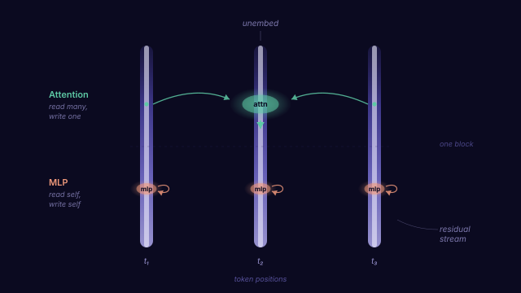
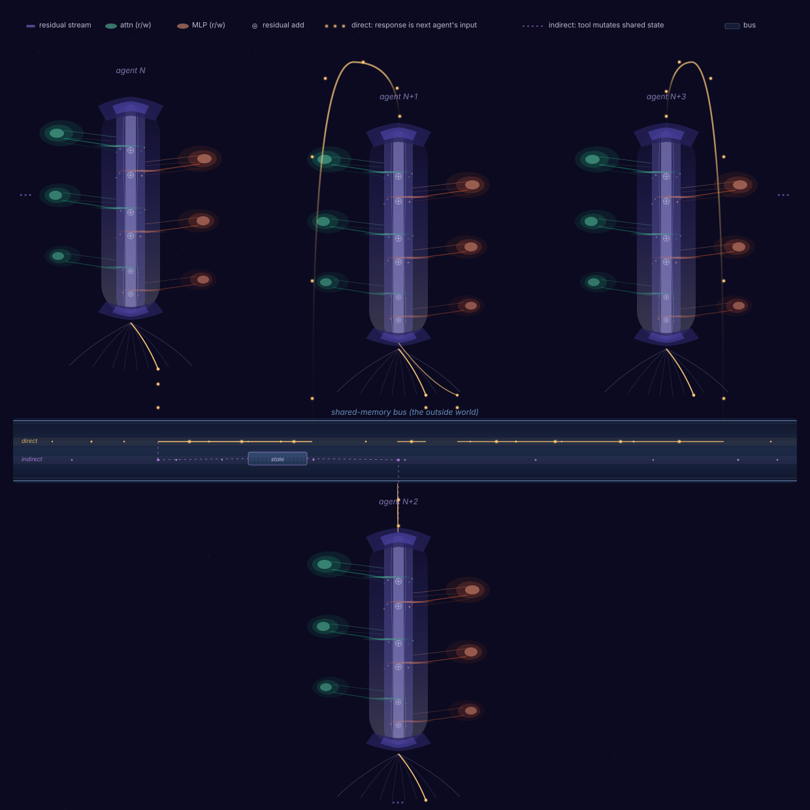
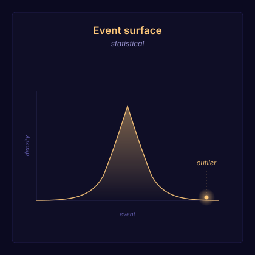
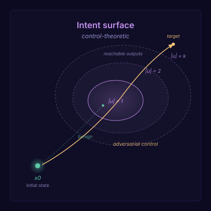
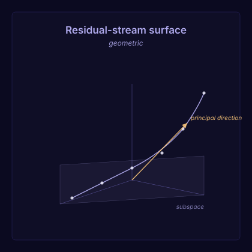

A unifying picture for Agent Behavior Analytics, and a sharper way to think about anomaly detection across event, intent, and residual-stream space.
Classical anomaly detection (UEBA, EDR, network traffic) was built for the outside world: log lines, packets, downstream events.
Agent traffic moves the problem inside. The adversary shapes the inputs your detector sees. The mechanism lives in the agent's internal state, not in any log line.
ABA is anomaly detection on a unified substrate (inputs, internal state, outputs), not just the boundary.
The substrate has structure at two scales: inside one agent, then lifted across agents.

Every token position carries one vector, updated layer by layer. Each layer reads from the stream, writes a delta, and the next layer reads the sum.
Attention moves information across positions. MLP processes it locally, in place.

One agent's decoded output becomes another's input. Tool calls, queues, and databases form a shared-memory bus: a residual stream one level up.
Both go through decoding. What differs is what the output does next.
Each surface demands a different analysis. Bringing the wrong one is what makes naive prompt anomaly detection fail.

API calls, file writes, scheduler entries, database mutations. The generative process is stable, the vocabulary is finite. Density estimation does most of the work. Classical UEBA.
The new wrinkle is provenance: every flagged event traces back to a specific decode by a specific agent.

Prompts aren't data. They're control inputs. The model is the plant. Outputs are the system's response. The question isn't "is this prompt unusual" but "what region of output space did this input drive us into, and at what control cost?"
Anomaly is contested on this surface. A rare philosophical question can look like an attack; a low-effort prompt can land in an unsafe region. What density estimation misses, reachability captures: how much control effort is needed to land here from a benign start?
The right tools come from control theory: reachable sets, controllability, energy of control. See Bhargava et al., What's the Magic Word? A Control Theory of LLM Prompting.

The other two surfaces only see the boundary: what came in, what went out. The mechanism of prompt injection lives inside the residual stream, and across the bus when agents share memory.
Detection here is about the geometry of the substrate: belief-state manifolds, feature directions, subspace projections, write-stream spectra. The residual stream is the model, and its geometry is the signal.
The right tools come from mechanistic interpretability: representation geometry, sparse features, activation baselines. See Shai et al., Transformers Represent Belief State Geometry in their Residual Stream.
Classical security monitors the boundary. ABA monitors the substrate.
Statistics, control, geometry.